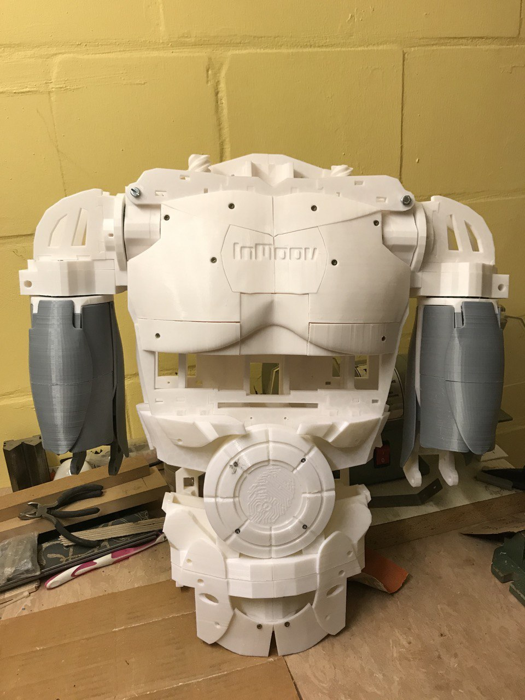
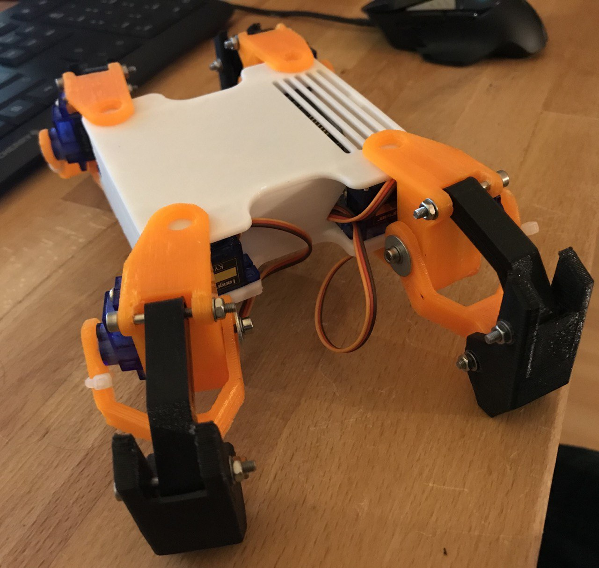
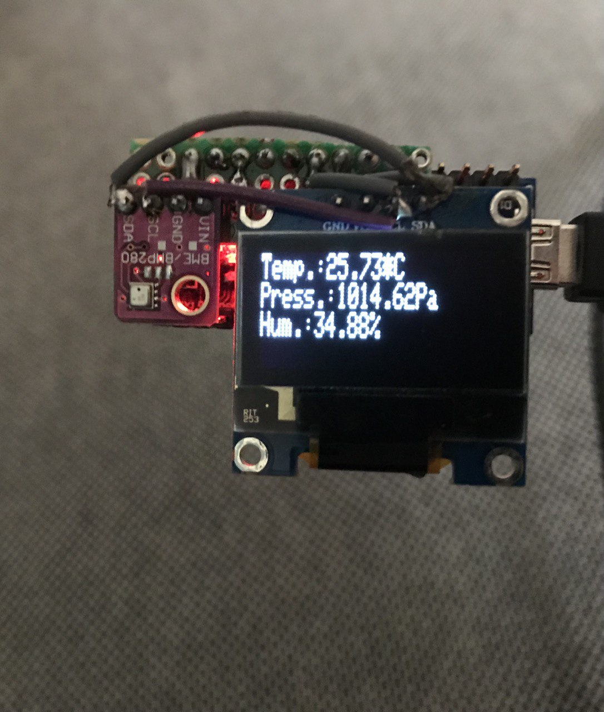

Building an InMoov robot.
Inmoov is a project started in 2012 by Gael Langevin. I stumbled upon this project in 2014 and thus was pulled into the hobby of 3D printing. I always wanted to own a humanoid robot and wanted something to tinker with.

Pirotino. It's only a test.
To get a grip into robotics I started with a four legged robot to learn about positioning with inverse kinematic. Learning about bus-systems like I2C and SPI to connect components like a display and a TOF sensor. Understanding the electronics and how to supply power.

Weatherstation. A classic.
The weatherstation was a fun little project to try out my soldering iron and to learn how to use a new sensor. I also had to solve the challenge of a compact design.
